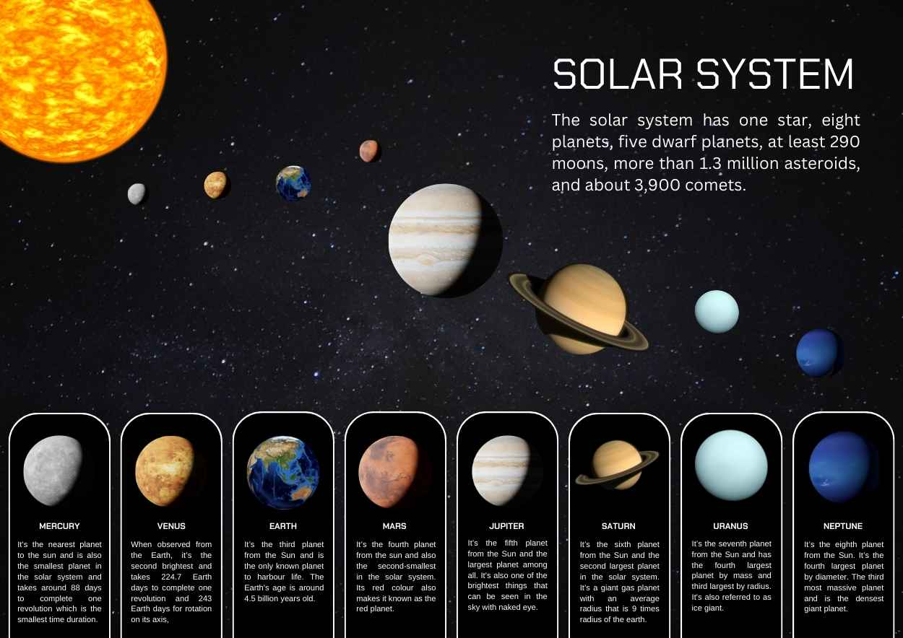
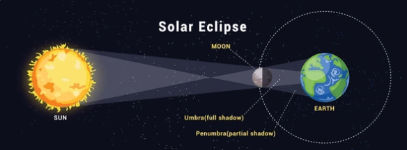
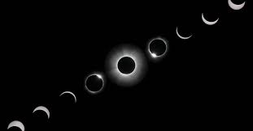
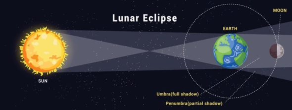
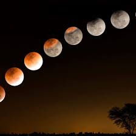

Login to access the interactive website and learn new things.
New user? Register here
New Registration
Enter your details to register for Solar System Eclipse portal.
Back to Login
Solar System Eclipse
Introduction to the Solar System and Eclipses
The Solar System is a vast collection of celestial bodies bound together by gravity around our central star, the Sun. It includes eight major planets, their moons, dwarf planets like Pluto, countless asteroids, icy comets, and dust particles. The Sun is the largest object in the Solar System and provides the light and heat necessary to support life on Earth. Each planet has unique features:
Inner rocky planets like Mercury, Venus, Earth, and Mars are closer to the Sun and have solid surfaces.
Outer gas and ice giants such as Jupiter, Saturn, Uranus, and Neptune are much larger and made mainly of gases and ices.
Earth orbits the Sun at an average distance of about 150 million kilometers and completes one revolution in 365 days, creating our year. The planets all follow elliptical paths called orbits, each taking different times to complete a revolution. These differences in orbit time and distance give each planet its own unique environment and seasons.
An interesting natural phenomenon within the Solar System is an eclipse. An eclipse occurs when one celestial body moves into the shadow of another. On Earth, the most commonly observed eclipses involve the Sun, Earth, and Moon. A solar eclipse happens when the Moon passes directly between the Sun and Earth, temporarily blocking sunlight and casting a shadow on Earth’s surface. This alignment can produce different types of solar eclipses, including total, partial, and annular, depending on the position and distances of the Moon and Sun.
During a total solar eclipse, the Moon completely covers the Sun’s bright disk, making the sky dark for a few minutes as if it were twilight even during the day. In a partial solar eclipse, only part of the Sun is obscured, and in an annular solar eclipse, the Moon appears smaller than the Sun, leaving a bright ring of light visible around it.
Eclipses do not occur every month because the Moon’s orbit is tilted relative to Earth’s orbit around the Sun. Only when the three bodies align closely in a straight line do eclipses happen, making them rare and exciting events to observe.
Course Registration
Registration submitted successfully! Enjoy your course.

The Solar System Basics
The Solar System is a gravitationally bound system consisting of a central star called the Sun and the objects that orbit it. It formed approximately 4.6 billion years ago from the collapse of a giant interstellar molecular cloud.
Solar System Sound
1. The Sun: Our Central Powerhouse
The Sun is a nearly perfect sphere of hot plasma at the center of our system. It is the most vital member of the solar family.
Mass: It accounts for 99.86% of the Solar System's total mass, providing the gravity that holds all planets in place.
Energy: Through nuclear fusion, it generates the light and heat required for all life on Earth.
Distance: It is roughly 150 million kilometers away from Earth (1 AU).
2. The Inner Planets (Terrestrial Group)
These four planets are closest to the Sun, defined by solid rocky surfaces and high density.
Mercury: The smallest planet. It has a cratered surface and virtually no atmosphere.
Venus: The hottest planet due to a thick atmosphere that creates a runaway greenhouse effect.
Earth: Our home. The only planet known to have liquid water and a stable environment for life.
Mars: The "Red Planet." It features the largest volcano in the solar system, Olympus Mons.
3. The Outer Planets (The Giant Group)
Located beyond the Asteroid Belt, these planets are massive and composed mostly of gases and ices.
Jupiter (Gas Giant): The largest planet, famous for its Great Red Spot storm.
Saturn (Gas Giant): Famous for its spectacular ring system made of ice and rock.
Uranus (Ice Giant): A cold planet that is unique because it rotates on its side.
Neptune (Ice Giant): The most distant planet, whipped by supersonic winds.
4. Orbital Mechanics
Orbit: Each planet travels around the Sun in an elliptical (oval-shaped) path.
Rotation: The spinning of a planet on its axis (creates Day and Night).
Revolution: The time taken to complete one full trip around the Sun (creates a Year).
5. Minor Celestial Bodies
Asteroid Belt: A region of rocky fragments between Mars and Jupiter.
Dwarf Planets: Round objects like Pluto that have not cleared their orbital path.
Comets: Icy bodies that develop glowing tails when near the Sun's heat.
Eclipses and the Science of Shadows
An eclipse is an astronomical event that occurs when one celestial body moves into the shadow of another. In our solar system, this phenomenon primarily involves the interaction between the Sun, Earth, and Moon.
Eclipse sound
1. The Nature of Shadows
Shadows in space are not just simple dark areas; they are composed of three distinct regions based on how much light is blocked:
Umbra: The innermost and darkest part of the shadow where the light source is completely blocked.
Penumbra: The outer part of the shadow where the light source is only partially blocked.
Antumbra: The area beyond the tip of the umbra where the blocking body appears smaller than the light source.
2. Solar Eclipses (Sun - Moon - Earth)
A solar eclipse occurs when the Moon passes between the Sun and Earth. This alignment can only happen during a New Moon.
Total Solar Eclipse: The Moon completely covers the Sun (occurs in the umbra).
Partial Solar Eclipse: Only a part of the Sun is obscured (occurs in the penumbra).
Annular Solar Eclipse: The Moon is too far away to cover the Sun completely, creating a "ring of fire."
Solar Eclipse Animation


3. Lunar Eclipses (Sun - Earth - Moon)
A lunar eclipse happens when the Earth passes between the Sun and the Moon, casting its massive shadow across the lunar surface. This occurs during a Full Moon.
Total Lunar Eclipse: The Moon turns reddish as it passes through Earth's umbra.
Partial Lunar Eclipse: Only a portion of the Moon enters Earth's umbra.
Penumbral Eclipse: The Moon passes through Earth's faint outer shadow.
Lunar Eclipse Animation


4. The 5-Degree Tilt
Eclipses do not happen every month because the Moon’s orbit is tilted by about 5 degrees relative to Earth's orbit around the Sun. Most of the time, the Moon's shadow misses the Earth, or the Earth's shadow misses the Moon.
5. Quick Comparison
Type
Middle Body
Moon Phase
Solar
Moon
New Moon
Lunar
Earth
Full Moon
Planets and Their Orbits
Use the planet buttons to explore information. The highlighted planet changes automatically every 5 seconds.
1. The Shape of an Orbit (The Ellipse)
Planets do not travel in perfect circles. Instead, they follow Elliptical orbits, which look like slightly flattened or stretched circles.
Eccentricity: This is the measurement of how "flat" or "oval" an orbit is. A perfect circle has an eccentricity of 0. Most planets have low eccentricity, meaning they are almost circular, while comets often have high eccentricity.
Perihelion: This is the specific point in a planet's orbit where it is closest to the Sun. At this point, the planet travels at its maximum speed.
Aphelion: This is the point where the planet is farthest from the Sun. At this point, the planet's orbital speed is at its slowest.
2. Kepler’s Laws of Planetary Motion
In the early 1600s, astronomer Johannes Kepler established three fundamental laws that describe exactly how planets move through space:
The Law of Ellipses: All planets move in elliptical orbits with the Sun located at one of the two "foci" (focus points) of the ellipse.
The Law of Equal Areas: An imaginary line connecting a planet to the Sun sweeps out equal areas in equal amounts of time. This means planets accelerate as they approach the Sun and decelerate as they move away.
The Law of Harmonies: This mathematical law proves that the further a planet is from the Sun, the longer it takes to complete one full trip (its orbital period).
3. Orbital Speeds and Periods
The distance from the Sun directly affects how fast a planet moves and how long its "year" lasts. Because gravity weakens with distance, the outer planets do not need to move as fast as the inner planets to stay in orbit.
Mercury: Travels at 47.4 km/s and finishes a year in just 88 days.
Earth: Travels at 29.8 km/s and finishes a year in 365.25 days.
Jupiter: Travels at 13.1 km/s and takes 12 Earth years to orbit once.
Neptune: Travels at only 5.4 km/s and takes 165 Earth years to complete a single orbit.
4. Axial Tilt and the Change of Seasons
While orbiting the Sun, planets also spin on an internal line called an Axis. Most planets are "tilted" rather than standing straight up and down. This is known as Axial Tilt.
Earth’s Tilt: Earth is tilted at 23.5 degrees, which is why we experience different seasons as we move around the Sun.
Uranus's Extreme Tilt: Uranus is tilted at 98 degrees. It essentially rolls around the Sun on its side, leading to extreme seasons that last 21 years each.
5. Minor Orbital Objects
Orbits aren't just for planets. The solar system is filled with other objects following their own paths:
Asteroids: Mostly found in the belt between Mars and Jupiter.
Comets: These have highly "eccentric" orbits that take them from the frozen outer reaches of the system to very close to the Sun.
Moons: These are "satellites" that orbit a planet rather than orbiting the Sun directly.
Assessment
Question 1 of 12
Assessment Finished
Review Your Answers:
My Profile
Username
Email Address
Date of Birth
Gender
Mobile Number
Father's Name
Mother's Name
Parent's Occupation
Country
Education
Residential Address
Assessment Results
No results yet.
Feedback & Contact Us
Please share your suggestions or doubts using this form. Your message
will be sent securely to the support team for review.